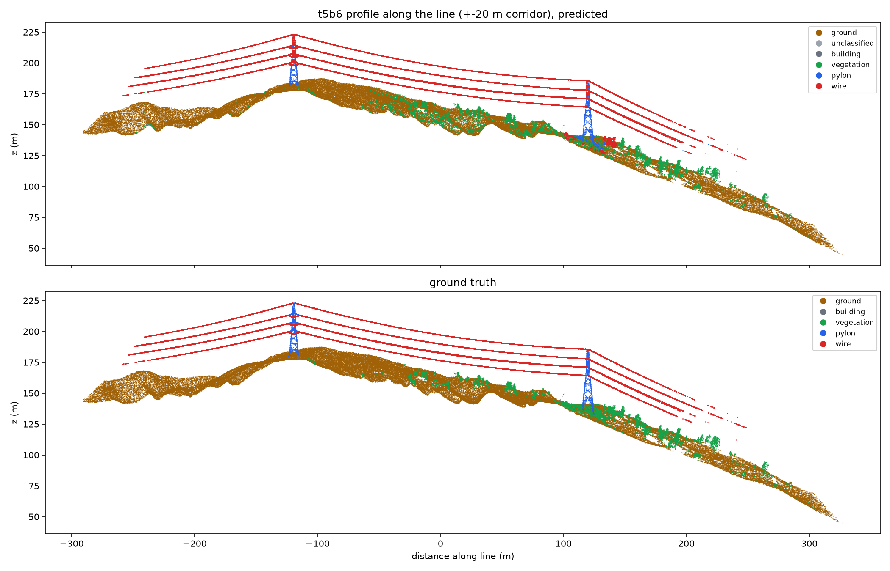
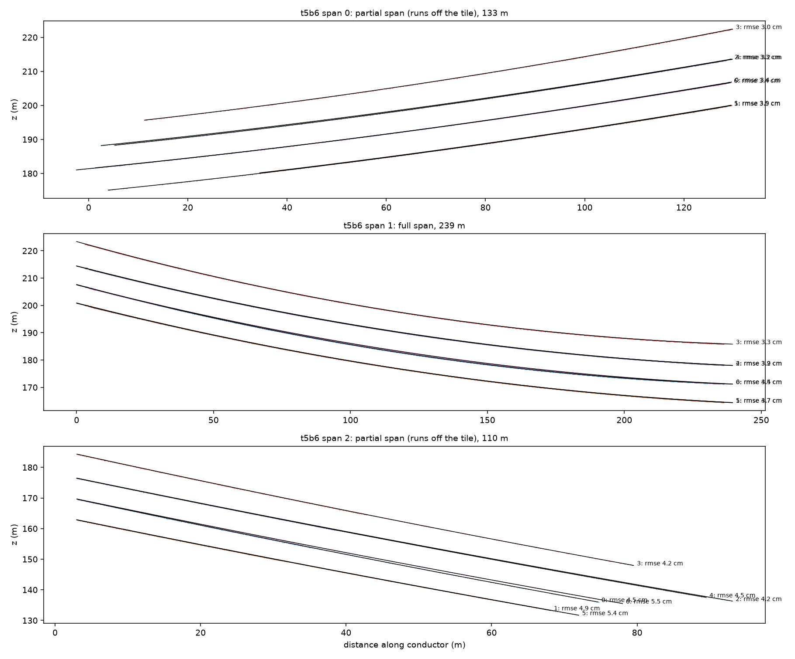
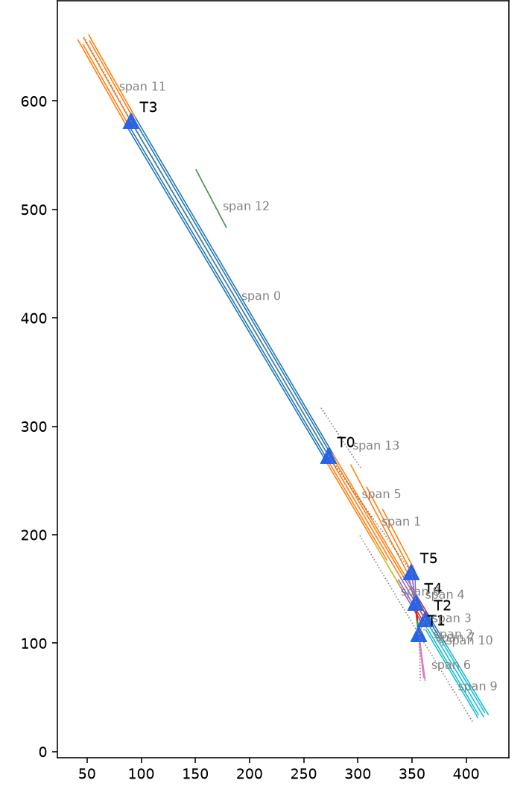
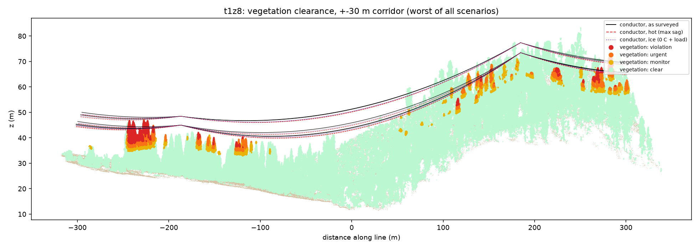
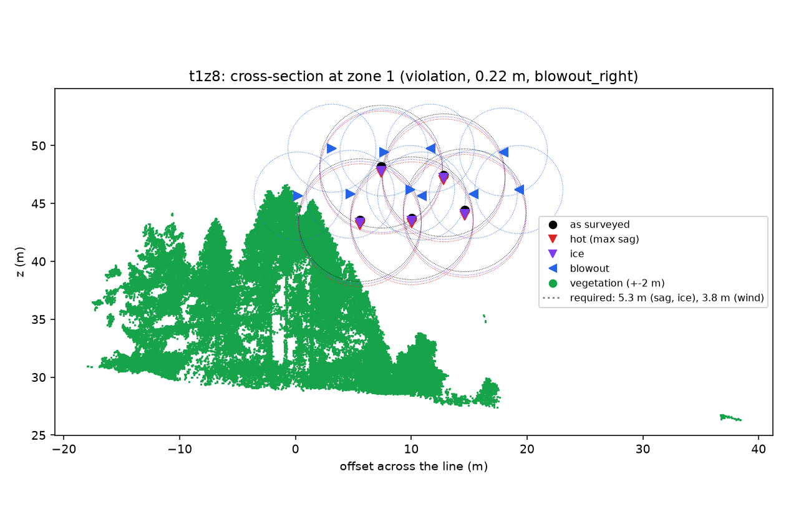
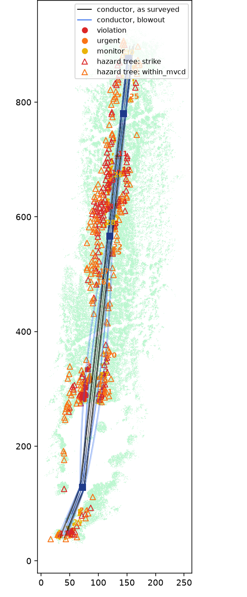

Will the line still clear the trees on a hot, windy day?
A pipeline that takes raw drone LiDAR of a power line, models every conductor, carries it to the worst-case temperature, ice and wind, and measures the clearance to every tree. Every number is scored against hand-labelled data.
Clearance from geometry and physics, not a trained model.
Plain Python (NumPy, SciPy, laspy). Rules on the point cloud's shape, a catenary per conductor, and the conductor change-of-state equation, checked tile by tile against Swiss high-voltage lines labelled by hand.
389 M points of Swiss high-voltage lines: alpine, forest and a junction.
Encroachment zones found on a held-out forest tile, none false, all in the right tier.
Vertical fit of each conductor's catenary to its points.
Trained models. Every decision is a rule you can read in the code.
Pipeline
Three phases, each checked
against hand labels.
Label every point
Ground, vegetation, wire, pylon and building, from geometry alone.
- Progressive morphological filter for the terrain, then height above ground.
- Eigenvalue features (linearity, planarity, scattering) and the air gap below each point.
- Rules on 0.15 m voxels: wires are thin, near-horizontal and hang over open air.

Rebuild the line
Towers and spans form a graph, so a tile can hold several lines and junctions.
- Towers from steel, from kinks and turns in the wires, and at line ends; a tower is kept only if a conductor hangs from it.
- Conductors separated in each span's cross-section; wires merged by stray points are split again.
- A catenary
z = z0 + c(cosh((u−u0)/c) − 1)per conductor, robustly fitted and validated.


Clearance in every scenario
Each conductor is carried from the survey to the worst cases, then the 3D distance to every vegetation point is compared with the required distance.
- Tiered encroachment zones: violation, urgent, monitor (3 years of growth).
- Hazard trees: crown, lean and base, and whether a falling tree reaches a conductor.
- Wire that could not be modelled is reported, with the vegetation beside it marked not assessed, never clear.

Scenarios
Swiss rules, worst-case conductors.
Defaults follow the Swiss Leitungsverordnung (LeV, SR 734.31) for a 380 kV line, carried with the change-of-state equation from the conductor's surveyed tension. Voltage, conductor and survey temperature are not in the data, so all are parameters.
Greatest sag. Trees must stay 1.5 m + 0.01 m/kV away: 5.3 m (Art. 35).
Snow and ice load on each conductor; the same 5.3 m.
At 10 °C the conductor swings 44° sideways; 3.8 m to trees.


Results
Scored end to end.
The reference is a run built entirely from the dataset's hand labels: a conductor model fitted to the hand-labelled wire, and hand-labelled vegetation. Ours is compared with it zone by zone and point by point.
| t1z8 · forest | t1z6a · forest | t2z5 · junction | t4z1 · forest | t5b6 · alpine | |
|---|---|---|---|---|---|
| Points | 51 M | 50 M | 67 M | 103 M | 36 M |
| Wires found (recall / IoU) | 99% / 0.82 | 99% / 0.69 | 99% / 0.81 | 97% / 0.70 | 97% / 0.79 |
| Towers found (true) | 2 (2) | 3 (3) | 6 (6) | 4 (4) | 2 (2) |
| Closest vegetation, as surveyed (reference) | 2.80 m (2.80) | 1.17 m (1.17) | 1.21 m (1.21) | 3.65 m (3.65) | 8.39 m (8.39) |
| Zones precision / recall | 100% / 100% | 100% / 98% | 99% / 100% | 100% / 97% | 100% / 100% |
| Matched zones in the same tier | 63 of 63 | 43 of 43 | 74 of 77 | 62 of 62 | 1 of 1 |
| Flagged vegetation points (precision / recall) | 99.9% / 100% | 97% / 97% | 97% / 97% | 99.9% / 99.6% | 100% / 100% |
| Hazard trees (precision / recall) | 97% / 97% | 88% / 97% | 89% / 96% | 91% / 92% | none exist |
- t1z6a, t2z5 and t4z1 were used to find and fix problems, so they are not held out. At the t2z5 junction the reference itself misses some conductors.
- Hazard-tree precision is lowest where many trees sit right on the 3.8 m threshold; recall stays at 92–97%.
t1z8, forest
Run once on frozen code before the tile was looked at: 34 of 34 encroachment zones found, none false, all in the same tier, clearance within 2 cm of the reference. Flagged points 99.9% / 100%, hazard trees 98% / 96%.
t4z1, forest, 103 M points
Phase 1 found 97.5% of the wire, then Phase 2 crashed on a diverging fit, and the run gave no result. The fixes it led to removed 4 false towers and a false violation; the tile now matches the reference to 5 cm, but no longer counts as held out.
Run it on a tile.
Python 3.12. The data is GridNet-HD on Hugging Face, 1.2–4.3 GB per tile.
# install
git clone https://github.com/KingDanielE/lidar-clearance && cd lidar-clearance
uv venv --python 3.12 .venv && uv pip install --python .venv -r requirements.txt -e .
# one forest tile, all three phases, scored against its hand labels
curl -L -C - -o data/t1z8.las https://huggingface.co/datasets/heig-vd-geo/GridNet-HD/resolve/main/t1z8/lidar/t1z8.las
clearance-batch data/t1z8.las --truth-field ground_truth --truth-map gridnetOutputs per tile: encroachment zones (CSV, GeoJSON), hazard trees, unmodelled wire, the classified cloud and the vegetation coloured by clearance (LAS), JSON reports and plots. Options: --kv, --t-survey, --t-max, --wind-pa.